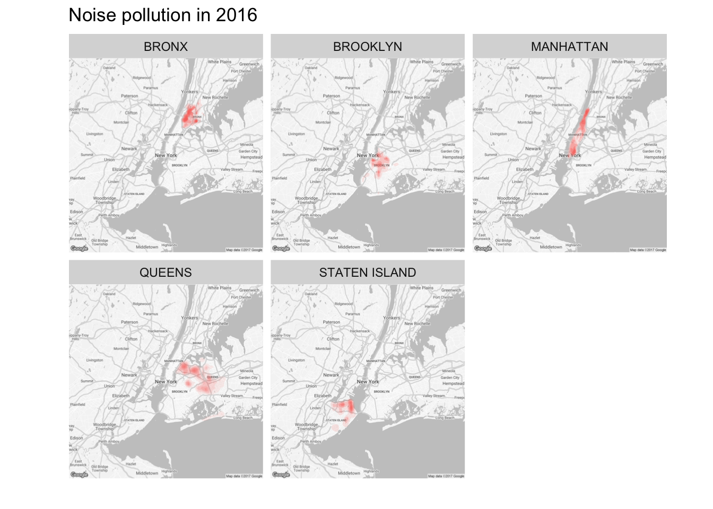
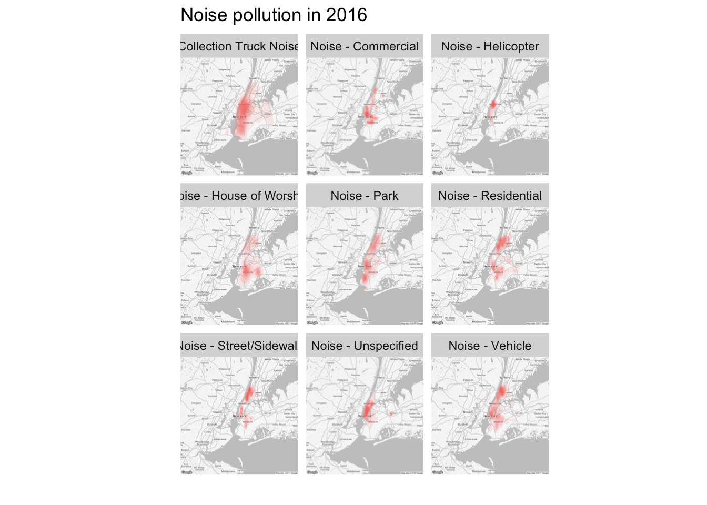
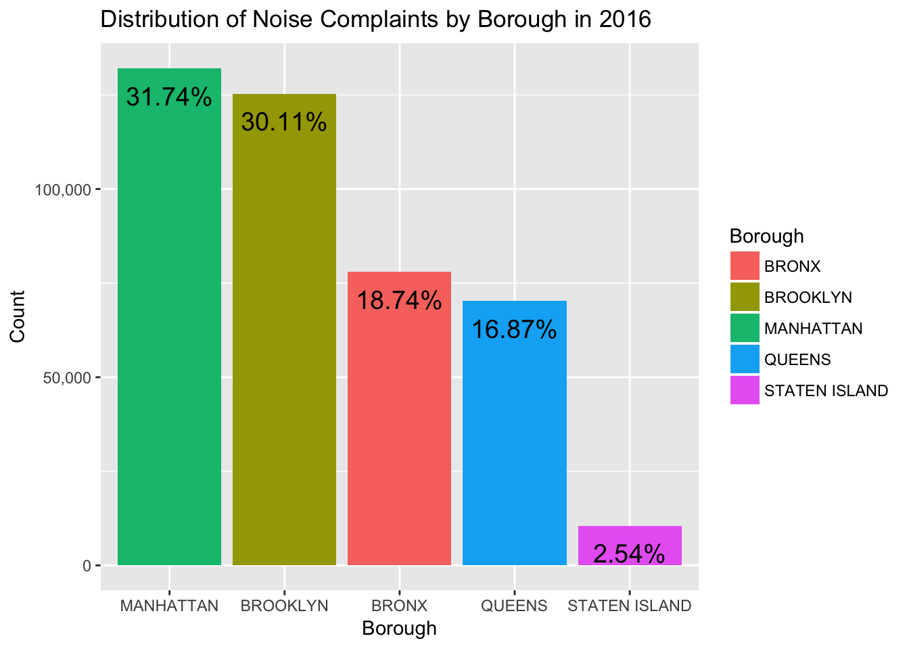
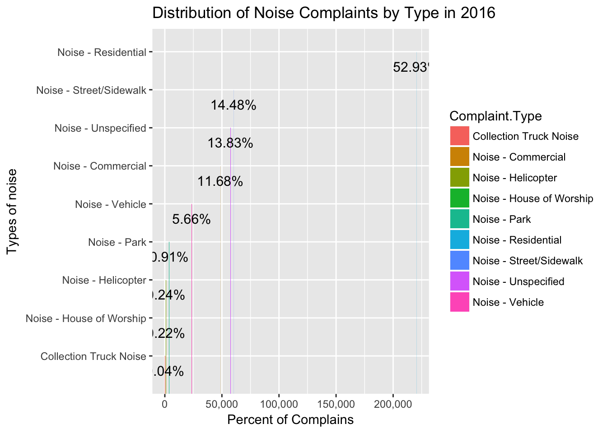
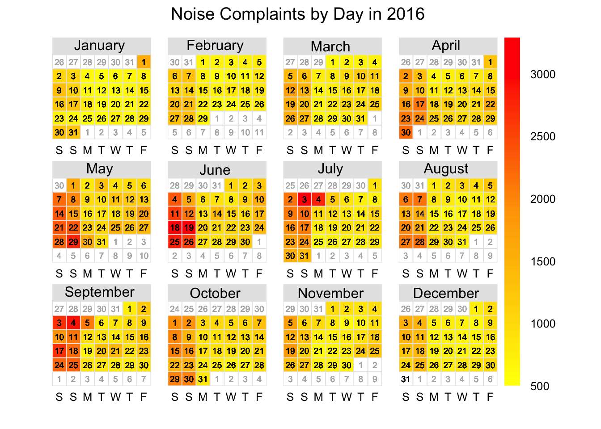

Noise pollution in New York City
Using NYC311 Service Requests Dataset
By Choi Dongon
Introduction

source - https://www.marceldigital.com/blog/2015/08/what-is-content-noise
Noise pollution is the one of serious problems especially wherein metropolitan area such as New York City. Noise has a negative impact on dwellers’ health or well-being lives, and also the growing body of scientific evidence is showing direct health effect (Dominici, 2013, and WHO, 2011). Thus, noise no longer needs to be considered just as an annoyance, but as one of serious problems we have been going through. In this project, I will investigate noise pollution problems in New York City by visualizing and analyzing NYC Open Data’s dataset on 311 Service Requests to have a better understanding with spatio-temporal perspective.
Materials and methods
Data source: 311 Service Requests
NYC311 provides 24/7 support to New Yorkers by providing a one-stop shop for a multitude of general needs. Within the proximity of the New York Metropolitan Area, callers can dial 311 to request for a variety of governmental services, such as filing a noise complaint, or to request for directions.
The data set used in this project contains 311 Service Requests in 2016. Each observation contains 53 variables describing the service request, such as complaint type, date received, incident address, and resolution description. To reduce computational overhead, only five columns were used for this analysis.
Load required packages
## Load any required packages
library(dplyr)
library(tidyr)
library(ggplot2)
library(ggmap)
library(openair)
library(scales)
library(knitr)
library(DT)
library(htmlwidgets)Data preparation
## Load NYC 311 noise complaints data
noiseData <- read.csv('data/NYC_noise_2016_1.csv', stringsAsFactors = F)
noise <- tbl_df(noiseData)
## Filter NYC 311 dataRemove missing data
noise <- filter(noise, !is.na(Latitude) | !is.na(Longitude))
noise <- select(noise, -Closed.Date, -Incident.Address, -Street.Name, -Cross.Street.1, -Cross.Street.2, -Intersection.Street.1, -Intersection.Street.2, -Address.Type, -City, -Landmark, -Facility.Type, -Due.Date, -Resolution.Action.Updated.Date, -X.Coordinate..State.Plane., -Y.Coordinate..State.Plane., -Park.Facility.Name, -Park.Borough, -School.Name, -School.Number, -School.Region, -School.Code, -School.Phone.Number, -School.Address, -School.City, -School.State, -School.Zip, -School.Not.Found, -School.or.Citywide.Complaint, -Vehicle.Type, -Taxi.Company.Borough, -Taxi.Pick.Up.Location, -Bridge.Highway.Name, -Bridge.Highway.Direction, -Road.Ramp, -Bridge.Highway.Segment, -Garage.Lot.Name, -Ferry.Direction, -Ferry.Terminal.Name, -Location, -Agency, -Agency.Name, -Status, -Incident.Zip, -Community.Board, -Descriptor, -Location.Type)
head.matrix(noise, n = 5L)## # A tibble: 5 x 6
## Unique.Key Created.Date Complaint.Type Borough Latitude
## <int> <chr> <chr> <chr> <dbl>
## 1 32310854 1/1/2016 Noise - Unspecified MANHATTAN 40.77449
## 2 32311691 1/1/2016 Noise - Unspecified QUEENS 40.74484
## 3 32312836 1/1/2016 Noise - Unspecified QUEENS 40.68950
## 4 32313714 1/1/2016 Noise - Unspecified STATEN ISLAND 40.60606
## 5 32313686 1/1/2016 Noise - Unspecified MANHATTAN 40.76389
## # ... with 1 more variables: Longitude <dbl>## Convert created date to POSIXlt object for using date elements
noise$Created.Date <- as.POSIXlt(noise$Created.Date, "%m/%d/%Y", tz = 'GMT')
## Create date fields to be used for time series analysis
noise <- mutate(noise, year = noise$Created.Date$year + 1900)
noise <- mutate(noise, month = noise$Created.Date$mon + 1)
noise <- mutate(noise, day = noise$Created.Date$mday)
## Round lat/lon to 3 decimals, to allow for density calculation based on location
noise <- mutate(noise, lat = signif(noise$Latitude, 5))
noise <- mutate(noise, lon = signif(noise$Longitude, 5))
## Download New York City map from Google map
nycMap <- get_googlemap("New York City", maptype='roadmap', style = "element:geometry%7Ccolor:0xf5f5f5&style=element:labels.icon%7Cvisibility:off&style=element:labels.text.fill%7Ccolor:0x616161&style=element:labels.text.stroke%7Ccolor:0xf5f5f5&style=feature:administrative%7Celement:geometry%7Cvisibility:off&style=feature:administrative.land_parcel%7Cvisibility:off&style=feature:administrative.land_parcel%7Celement:labels.text.fill%7Ccolor:0xbdbdbd&style=feature:administrative.neighborhood%7Cvisibility:off&style=feature:poi%7Cvisibility:off&style=feature:poi%7Celement:geometry%7Ccolor:0xeeeeee&style=feature:poi%7Celement:labels.text%7Cvisibility:off&style=feature:poi%7Celement:labels.text.fill%7Ccolor:0x757575&style=feature:poi.park%7Celement:geometry%7Ccolor:0xe5e5e5&style=feature:poi.park%7Celement:labels.text.fill%7Ccolor:0x9e9e9e&style=feature:road%7Celement:geometry%7Ccolor:0xffffff&style=feature:road%7Celement:labels%7Cvisibility:off&style=feature:road%7Celement:labels.icon%7Cvisibility:off&style=feature:road.arterial%7Celement:labels.text.fill%7Ccolor:0x757575&style=feature:road.highway%7Celement:geometry%7Ccolor:0xdadada&style=feature:road.highway%7Celement:labels.text.fill%7Ccolor:0x616161&style=feature:road.local%7Celement:labels.text.fill%7Ccolor:0x9e9e9e&style=feature:transit%7Cvisibility:off&style=feature:transit.line%7Celement:geometry%7Ccolor:0xe5e5e5&style=feature:transit.station%7Celement:geometry%7Ccolor:0xeeeeee&style=feature:water%7Celement:geometry%7Ccolor:0xc9c9c9&style=feature:water%7Celement:labels.text%7Cvisibility:off&style=feature:water%7Celement:labels.text.fill%7Ccolor:0x9e9e9e")
## Prepare to compare distribution of complaints by borough
byborough <- group_by(select(noise, -Created.Date), Borough, year)
byborough <- summarise(byborough, count = n())
byborough <- group_by(byborough, year)
byborough <- mutate(byborough, percent = byborough$count / sum(byborough$count) *100)
## Prepare to compare distribution of complaints by noise type
bynoisetype <- group_by(select(noise, -Created.Date), Complaint.Type, year)
bynoisetype <- summarise(bynoisetype, count = n())
bynoisetype <- group_by(bynoisetype, year)
bynoisetype <- mutate(bynoisetype, percent = bynoisetype$count / sum(bynoisetype$count)*100)
## Prepare data for daily analysis
noisedf <- read.csv('data/NYC_noise_2016_1.csv', stringsAsFactors = F) %>%
filter(!is.na(Created.Date)) %>%
select(-Location)
caldata <- select(noisedf, Created.Date, Unique.Key)
caldata <- mutate(caldata, Created.Date = as.character(Created.Date))
caldata <- mutate(caldata, Created.Date = substr(Created.Date, 0, 10))
caldata <- group_by(caldata, Created.Date)
caldata <- summarise(caldata, count = n())
names(caldata)[1] <- "date"
caldata$date <- as.POSIXct(caldata$date, "%m/%d/%Y", tz = "GMT")Results
Noise pollution by Borough
Noise pollution by Type
Visualize noise pollution: Space, Time
## Map noise pollution in 2016
ggmap(nycMap) +
stat_density2d(aes(x=lon, y=lat, fill='red', alpha=..level.., size=0), data=noise, geom = 'polygon') +
facet_wrap(~ Borough) + ggtitle("Noise pollution in 2016") +
theme(axis.ticks = element_blank(), axis.text.x = element_blank(), axis.text.y = element_blank(), legend.position = 'none') +
xlab("") + ylab("")
## Map noise pollution by noise type
ggmap(nycMap) +
stat_density2d(aes(x=lon, y=lat, fill='red', alpha=..level.., size=0), data=noise, geom = 'polygon') +
facet_wrap(~ Complaint.Type) + ggtitle("Noise pollution in 2016") +
theme(axis.ticks = element_blank(), axis.text.x = element_blank(), axis.text.y = element_blank(), legend.position = 'none') +
xlab("") + ylab("")
## Plot distribution of noise pollutions by borough
ggplot(byborough, aes(x = reorder(Borough, -count), y = count, fill = Borough)) +
geom_bar(stat = 'identity') +
ggtitle('Distribution of Noise Complaints by Borough in 2016') +
xlab("Borough") + ylab('Count') +
scale_y_continuous(labels=comma) +
geom_text(aes(label = paste0(round(byborough$percent,2),"%")), size = 5, hjust = 0.5, vjust = 2, position = 'identity')
## Plot distribution of noise pollutions by type
ggplot(bynoisetype, aes(x=count, y=reorder(Complaint.Type, count), fill = Complaint.Type)) +
geom_bar(stat = 'identity') +
ggtitle('Distribution of Noise Complaints by Type in 2016') +
xlab("Percent of Complains") + ylab('Types of noise') +
scale_x_continuous(labels=comma) +
geom_text(aes(label = paste0(round(bynoisetype$percent,2),"%")), size = 4, hjust = 0.5, vjust = 2, position = 'identity')
## Plot a calendar heatmap on Noise Complaints by day in 2016
calendarPlot(caldata, pollutant = "count", year = 2016, main = "Noise Complaints by Day in 2016", cols=c('yellow','orange','red'))
Conclusions
Given a two-week timeframe for completion of this project, the scope of the analysis was limited. If given more time, it would be interesting to conduct the following research:
Do a further work on spatial quiry finding peaceful and quiet areas within each Borough in New York City.
Include the detailed complaint description from the original data set to understand the root causes of noise complaints. Such an analysis will require the use of natural language processing to process the large volume of texts.
References
[1] WHO, 2011, Burden of Disease from Environmental Noise.
[2] Dominici, 2013, Residential exposure to aircraft noise and hospital admissions for cardiovascular diseases: multi-airport retrospective study, British Medical Journal.
[3] NYC Open Data - https://opendata.cityofnewyork.us/
[4] NYC Data Science Academy Blog - https://nycdatascience.com/blog/